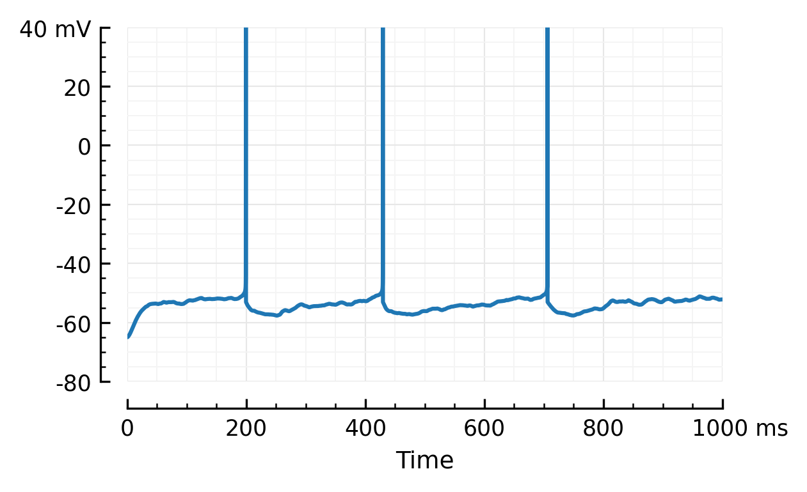
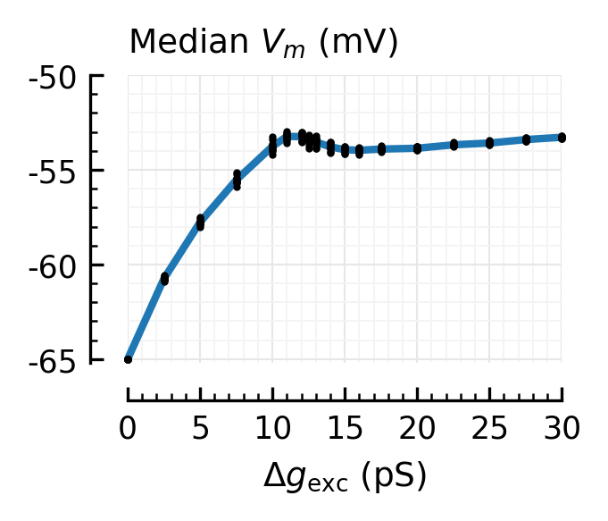
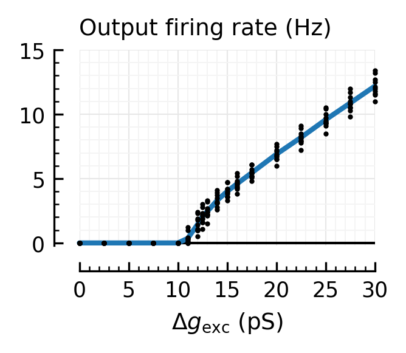
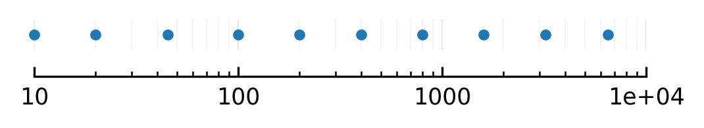
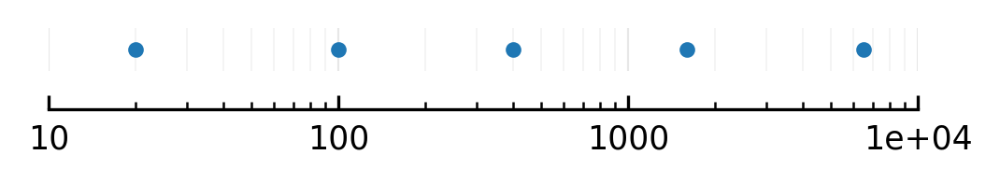

2023-08-05__AdEx_Nto1_we_sweep
Contents
2023-08-05__AdEx_Nto1_we_sweep¶
(We’ve made Nto1AdEx.jl now).
Let’s do an unholy python julia brian hybrid.
(plotting (and nb restarting) in julia still too slow startup).
But sim is almost 1000x faster than brian.
%%time
from brian2.units import *
CPU times: total: 984 ms
Wall time: 2.7 s
%%time
%run lib/plot.py
Importing mpl, brian … ✔
CPU times: total: 0 ns
Wall time: 18.8 ms
https://github.com/JuliaPy/pyjulia
%%time
from julia import Pkg
CPU times: total: 3.16 s
Wall time: 5.34 s
%%time
Pkg.activate("..")
# Pkg.status()
# output is in nb terminal
CPU times: total: 1.03 s
Wall time: 2.26 s
%%time
from julia import Nto1AdEx
CPU times: total: 516 ms
Wall time: 1.19 s
%%time
out = Nto1AdEx.sim(6500, 10);
CPU times: total: 375 ms
Wall time: 1.15 s
(First run: 1.3 seconds)
V = (out.V * volt)
\[\left[\begin{matrix}-65. & -64.99986538 & -64.99623327 & \dots & -54.53301958 & -54.51563329 & -54.49719995\end{matrix}\right]\,\mathrm{m}\mathrm{V}\]
%run lib/util.py
Importing mpl, brian … ✔
Importing pandas … ✔
V = ceil_spikes_jl(out)
\[\left[\begin{matrix}-65. & -64.99986538 & -64.99623327 & \dots & -54.53301958 & -54.51563329 & -54.49719995\end{matrix}\right]\,\mathrm{m}\mathrm{V}\]
plotsig(V, tlim=[0,1000]*ms);

%run lib/diskcache.py
N = 6500
T = 10 * second
@cache("2023-08-05__AdEx_Nto1_we_sweep")
def sim(wₑ, seed):
out = Nto1AdEx.sim(N, T / second, seed, wₑ / siemens);
v = ceil_spikes_jl(out)
return dict(
wₑ = wₑ,
seed = seed,
median_Vm = median(v),
output_rate = out.spikerate * Hz,
)
wₑs = [0, 2.5, 5, 7.5, 10, 11, 12, 12.5, 13, 14, 15, 16, 17.5, 20, 22.5, 25, 27.5, 30] * pS
# wₑs = [0, 5, 10, 15, 30] * pS
seeds = range(10);
# seeds = [2]
# from tqdm import tqdm
data = []
for wₑ in (wₑs):
for seed in (seeds):
d = sim(wₑ, seed)
data.append(d)
df = pd.DataFrame(data)
df.head()
| we | seed | median_Vm | output_rate | |
|---|---|---|---|---|
| 0 | 0. S | 0 | -64.99999991 mV | 0. Hz |
| 1 | 0. S | 1 | -64.99999991 mV | 0. Hz |
| 2 | 0. S | 2 | -64.99999991 mV | 0. Hz |
| 3 | 0. S | 3 | -64.99999991 mV | 0. Hz |
| 4 | 0. S | 4 | -64.99999991 mV | 0. Hz |
df = units_to_header(df)
| we_pS | seed | median_Vm_mV | output_rate_Hz | |
|---|---|---|---|---|
| 0 | 0.0 | 0 | -65.000000 | 0.0 |
| 1 | 0.0 | 1 | -65.000000 | 0.0 |
| 2 | 0.0 | 2 | -65.000000 | 0.0 |
| 3 | 0.0 | 3 | -65.000000 | 0.0 |
| 4 | 0.0 | 4 | -65.000000 | 0.0 |
| ... | ... | ... | ... | ... |
| 175 | 30.0 | 5 | -53.365445 | 12.7 |
| 176 | 30.0 | 6 | -53.325009 | 12.5 |
| 177 | 30.0 | 7 | -53.339397 | 12.1 |
| 178 | 30.0 | 8 | -53.243763 | 11.8 |
| 179 | 30.0 | 9 | -53.282189 | 11.5 |
180 rows × 4 columns
# (`!mkdir -p data` not working in IJulia)
!mkdir data
df.to_csv("data/2023-08-05__AdEx_Nto1_we_sweep.csv")
A subdirectory or file data already exists.
df = pd.read_csv("data/2023-08-05__AdEx_Nto1_we_sweep.csv", index_col=0);
# groupby no work w/ brian units
df.groupby("we_pS").mean()
| seed | median_Vm_mV | output_rate_Hz | |
|---|---|---|---|
| we_pS | |||
| 0.0 | 4.5 | -65.000000 | 0.00 |
| 2.5 | 4.5 | -60.760530 | 0.00 |
| 5.0 | 4.5 | -57.772544 | 0.00 |
| 7.5 | 4.5 | -55.545334 | 0.00 |
| 10.0 | 4.5 | -53.767998 | 0.00 |
| 11.0 | 4.5 | -53.241056 | 0.35 |
| 12.0 | 4.5 | -53.253564 | 1.44 |
| 12.5 | 4.5 | -53.429906 | 2.05 |
| 13.0 | 4.5 | -53.535252 | 2.46 |
| 14.0 | 4.5 | -53.789522 | 3.31 |
| 15.0 | 4.5 | -53.944610 | 4.00 |
| 16.0 | 4.5 | -53.971094 | 4.59 |
| 17.5 | 4.5 | -53.909696 | 5.45 |
| 20.0 | 4.5 | -53.865161 | 6.89 |
| 22.5 | 4.5 | -53.684544 | 8.19 |
| 25.0 | 4.5 | -53.589417 | 9.57 |
| 27.5 | 4.5 | -53.407884 | 10.87 |
| 30.0 | 4.5 | -53.284075 | 12.18 |
def plot_dots_and_means(x, y, ax = None, **kw):
xu = unique(x)
ym = [mean(y[x == xi]) for xi in xu]
plot(xu, ym, "-", lw=2, ax=ax, **kw, clip_on=False)
plot(x, y, "k.", ms=4, mfc='k', mec='none', ax=ax, **kw, clip_on=False)
fig, ax = plt.subplots(figsize=(0.9*mw, 0.6*mw))
xlim = [0, 30]
plot_dots_and_means(df.we_pS, df.median_Vm_mV, ax, xlim=xlim, ylim=[-65.2, -50])
hylabel(ax, "Median $V_m$ (mV)")
xl = "$Δg_\\mathrm{exc}$ (pS)"
plt.xlabel(xl);

fig, ax = plt.subplots(figsize=(0.9*mw, 0.6*mw))
plt.axhline(0, 0, 1, c="black", lw=1)
plot_dots_and_means(df.we_pS, df.output_rate_Hz, ax, ylim=[-0.2, 15], xlim=xlim)
hylabel(ax, "Output firing rate (Hz)")
plt.xlabel(xl);

fig, axs = plt.subplots(figsize=(1*mw, 1.5*mw), nrows=2)
axs[1].axhline(0, 0, 1, c="black", lw=1)
plot_dots_and_means(df.we_pS, df.median_Vm_mV, axs[0], xlim=xlim, ylim=[-65, -50], nbins_x=4)
plot_dots_and_means(df.we_pS, df.output_rate_Hz, axs[1], xlim=xlim, ylim=[-0, 15], nbins_x=4)
hylabel(axs[0], "Median $V_m$ (mV)")
hylabel(axs[1], "Output firing rate (Hz)")
rm_ticks_and_spine(axs[0])
plt.tight_layout(h_pad=1.4)
axs[1].set_xlabel(xl);
savefig_thesis("input_drive_we")
Saved at `../thesis/figs/input_drive_we.pdf`
Now, for diff N¶
First, which N finally chosen.
Something ± looking evenly spaced on log scale.
(but maybe also nice integers).
Ns = [10, 20, 45, 100, 200, 400, 800, 1600, 3200, 6500]
Nₑs = array(Ns) * 4/5
array([ 8., 16., 36., 80., 160., 320., 640., 1280., 2560.,
5200.])
%run lib/plot.py
importing mpl … ✔
importing brian … ✔
plot(Ns, [1]*len(Ns), ".", xscale="log", fs=(4, 0.2), ytype="off");

Or if you want less sims to run, a subset:
Ns2 = [20, 100, 400, 1600, 6500];
plot(Ns2, [1]*len(Ns2), ".", xscale="log", fs=(4, 0.2), ytype="off");

Seeds for search:
w0 = lambda N: 15 * pS * (6500 / N)
w0s = [w0(N) for N in Ns]
[9.75 * nsiemens,
4.875 * nsiemens,
2.16666667 * nsiemens,
0.975 * nsiemens,
0.4875 * nsiemens,
243.75 * psiemens,
121.875 * psiemens,
60.9375 * psiemens,
30.46875 * psiemens,
15. * psiemens]
from scipy.optimize import root_scalar
def avg_spikerate(N, w, nseeds = 10, T = 10*second):
R = 0
for seed in range(nseeds):
sim = Nto1AdEx.sim(N, T/second, seed, w)
R += sim.spikerate
return R / nseeds * Hz
def f(w, N, target_fr = 4.0*Hz):
fr = avg_spikerate(N, w)
return (fr - target_fr) / Hz
wₑs = []
for (N, w0) in zip(Ns, w0s):
# Scipy no work w/ brian units:
w0 = w0/siemens # `/=` no work..
print(f"{N=}")
print(f"Init: {w0*siemens} → {avg_spikerate(N, w0)}")
print("Finding root", end=" … ")
sol = root_scalar(f, bracket=[w0/4, w0*4], args=(N,), xtol=w0/1000)
print(f"✔ ({sol.iterations=})")
print(f"Found: {sol.root*siemens} → {avg_spikerate(N, sol.root)}")
wₑs.append(sol.root*siemens)
print("")
N=10
Init: 9.75 nS → 24.48 Hz
Finding root … ✔ (sol.iterations=6)
Found: 2.83884334 nS → 3.99 Hz
N=20
Init: 4.875 nS → 18.11 Hz
Finding root … ✔ (sol.iterations=5)
Found: 1.85624115 nS → 4. Hz
N=45
Init: 2.16666667 nS → 13.27 Hz
Finding root … ✔ (sol.iterations=7)
Found: 1.052897 nS → 4.01 Hz
N=100
Init: 0.975 nS → 9.97 Hz
Finding root … ✔ (sol.iterations=6)
Found: 0.58695123 nS → 4. Hz
N=200
Init: 0.4875 nS → 7.84 Hz
Finding root … ✔ (sol.iterations=5)
Found: 0.33519511 nS → 4.01 Hz
N=400
Init: 243.75 pS → 6.85 Hz
Finding root … ✔ (sol.iterations=8)
Found: 183.88420978 pS → 4. Hz
N=800
Init: 121.875 pS → 5.83 Hz
Finding root … ✔ (sol.iterations=6)
Found: 100.2994751 pS → 4. Hz
N=1600
Init: 60.9375 pS → 4.73 Hz
Finding root … ✔ (sol.iterations=9)
Found: 55.84664628 pS → 4.01 Hz
N=3200
Init: 30.46875 pS → 4.46 Hz
Finding root … ✔ (sol.iterations=9)
Found: 29.04560215 pS → 4. Hz
N=6500
Init: 15. pS → 4. Hz
Finding root … ✔ (sol.iterations=11)
Found: 15.03590947 pS → 4. Hz
frs = [avg_spikerate(N, w/siemens) for (N,w) in zip(Ns, wₑs)];
factor = array(w0s) / array(wₑs);
df = units_to_header(pd.DataFrame(dict(N=Ns, we=wₑs, fr=frs, factor=factor)))
| N | we_nS | fr_Hz | factor | |
|---|---|---|---|---|
| 0 | 10 | 2.838843 | 3.99 | 3.434497 |
| 1 | 20 | 1.856241 | 4.00 | 2.626275 |
| 2 | 45 | 1.052897 | 4.01 | 2.057814 |
| 3 | 100 | 0.586951 | 4.00 | 1.661126 |
| 4 | 200 | 0.335195 | 4.01 | 1.454377 |
| 5 | 400 | 0.183884 | 4.00 | 1.325562 |
| 6 | 800 | 0.100299 | 4.00 | 1.215111 |
| 7 | 1600 | 0.055847 | 4.01 | 1.091158 |
| 8 | 3200 | 0.029046 | 4.00 | 1.048997 |
| 9 | 6500 | 0.015036 | 4.00 | 0.997612 |
df.to_csv("data/2023-08-05__AdEx_Nto1__wₑs_for_4Hz_for_all_N.csv")
fig, ax = plt.subplots()
Δw = "$\Delta g_\mathrm{exc}$"
sett(ax, ylim=[0.01, 10], xlim=[10, 7000], xlabel="Num inputs $N$", ylabel=f"Synaptic strength {Δw}")
plot(Ns, w0s, ".-", xscale="log", yscale="log", ax=ax, label="Initial guess")
plot(Ns, wₑs, ".-", ax=ax, label=f"Actual {Δw} needed");
ax.set_title("Input needed to reach output firing rate of 4.0 Hz", y=1.05)
ax.legend();
savefig_thesis("we-for-4Hz-for-all-N")
Saved at `../thesis/figs/we-for-4Hz-for-all-N.pdf`